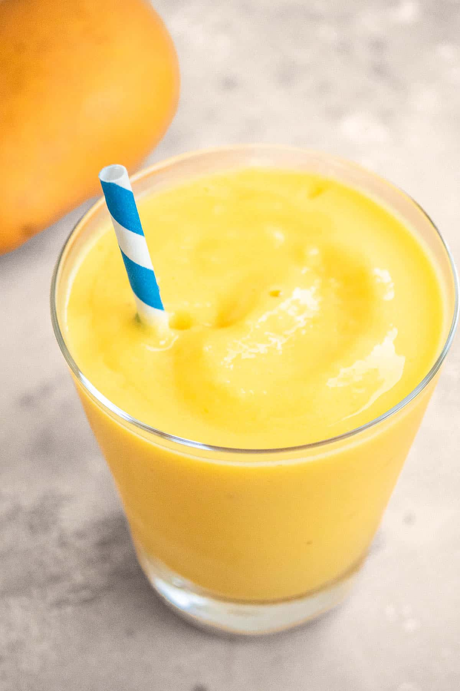

Mango Smoothie

Description
Nothing could be better than a mango smoothie in summers.This mango smoothie recipe is simple: just blend a handful of fresh fruits and a few scoops of yogurt until it is smooth and rich.
Ingredients
- 1 cup frozen mango chunks
- Half cup frozen banana slices
- Half cup orange juice
- 1 liter whole milk
- 3 tablespoons plain yogurt (whole milk)
Steps
- Blend. Add the mango, banana, yogurt, and orange juice to a blender and blend until your desired consistency is achieved, adding more water or juice to thin as necessary.
- Pour into 1 large or 2 small glasses and enjoy.
The page heavily borrows from this webpage.